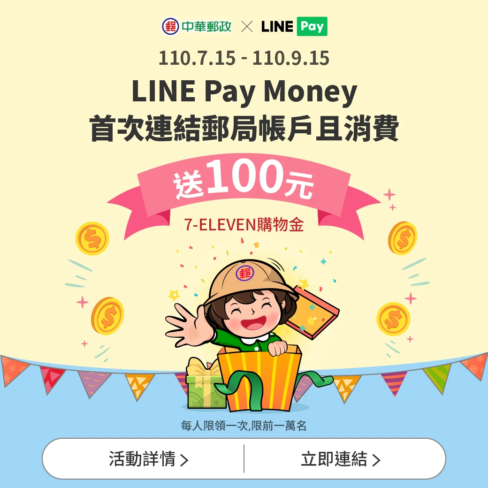
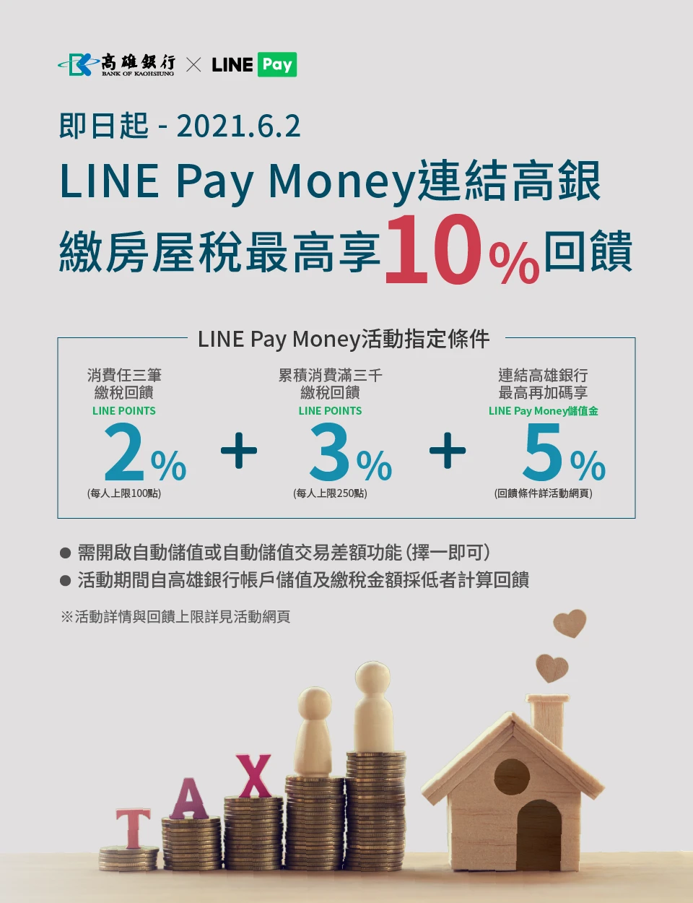
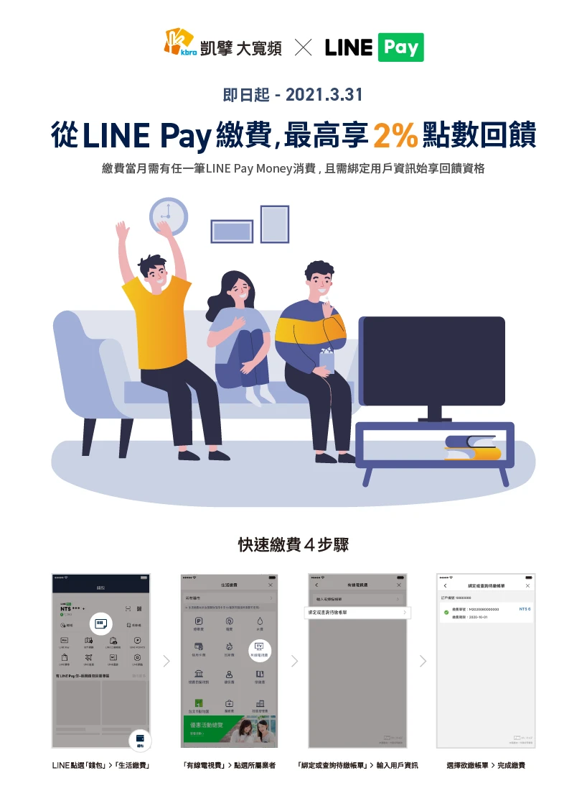

涵蓋活動主視覺、社群行銷素材、印刷品設計等多元媒介的視覺設計作品，從概念發想到視覺執行，展現跨媒介的設計整合能力。
以下為歷年設計的廣告宣傳品作品，點擊圖片可放大檢視。



廣告宣傳品設計不僅是視覺美感的展現，更是品牌訊息傳達的關鍵環節。每一件作品都需要在有限的版面中精準傳達核心訊息，同時維持品牌一致性。這些跨媒介的設計經驗，讓我在數位介面設計中也能更敏銳地掌握視覺層級與資訊傳達的節奏。
APP — UI/UX — 金融科技
Product Design — IP 授權
Web — UI/UX — 公共服務